Everything Pentix does, in order. This page and its images are stored on your device the first time you read it, so it opens without a connection.
Before you start
How to use this guide
Pentix is a vector design studio built for a phone held in two hands: a pen, a pencil, a shape builder and a pathfinder, all reachable by either thumb. This guide walks through every tool in the order you will meet them, with the real screens of the app beside the explanation.
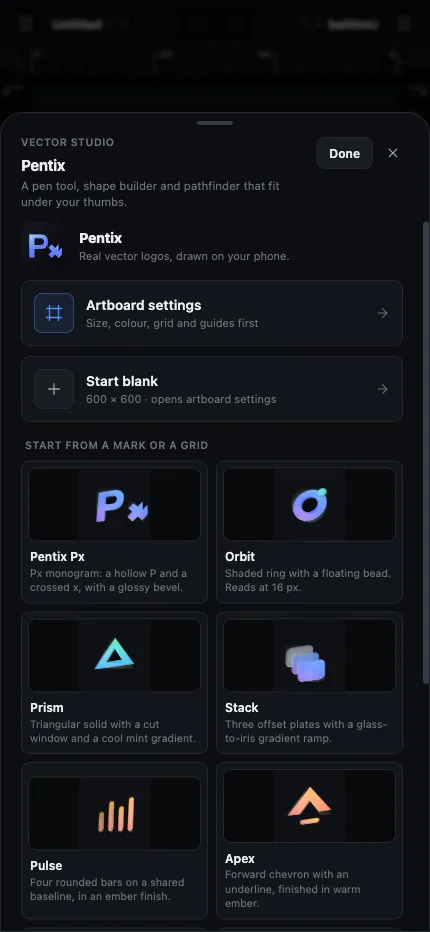
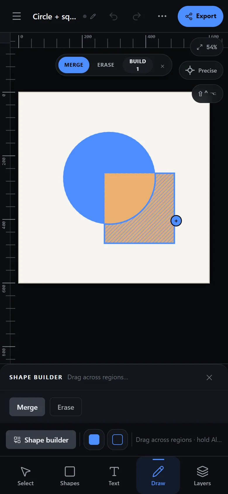
- Read it in order the first time. Chapters follow the real workflow: set up a board, draw, combine, colour, save, export.
- The screens are real captures. A 600 × 600 px board at 61% zoom unless a caption says otherwise.
- Every tool is on the bottom dock. The strip above the dock changes with the active tool, so the screens differ by one tool at a time.
Chapter 1
Getting in
Open pentixl.vercel.app in Safari or Chrome. On a phone, add it to your home screen so it opens full screen without browser bars: Share, then “Add to Home Screen”. Everything you draw stays on the device — there is no account and nothing is uploaded.
The first screen is a start sheet. You can set up a board, open one of the ready-made marks to learn by pulling them apart, or go straight to this manual.
Three ways to begin
- Artboard settings. Choose the board size first — px, cm or in, with presets for the square boards a logo is delivered at.
- Start blank. A 600 × 600 board with nothing on it. This is what the rest of this guide uses.
- A starter mark. Pentix Px, Orbit, Prism, Stack, Pulse or Apex. They are ordinary documents: select one, inspect the nodes, build on it.
Chapter 2
The screen at a glance
The layout is fixed, so your thumbs learn it once. Nothing important hides behind a second level of navigation.
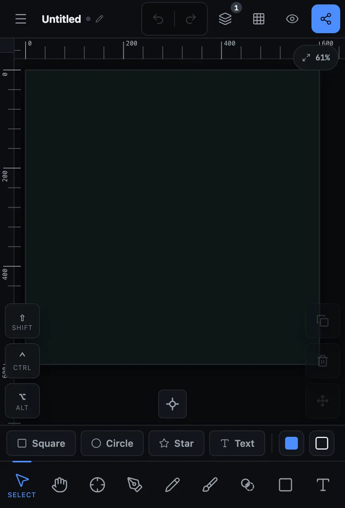
Top bar
- Menu. Save, backup, projects, canvas settings, references, patterns, the tutorial, help and feedback.
- Document name. Tap to rename. A dot beside it means changes are being written.
- Undo and redo. Step backwards or forwards through the document history.
- Layers. Opens the objects panel as a see-through sheet.
- Grid. Shows or hides the alignment grid and its settings.
- Eye. Preview mode — hides every panel, ruler and selection, leaving only the artboard.
- Share. Export an SVG or a PNG, with options for size, colour and transparency.
Side rails
- Left: SHIFT, CTRL, ALT. On-screen modifiers. SHIFT constrains angles and proportions, CTRL switches to direct selection, ALT breaks a handle or flips the shape builder into erase.
- Right: duplicate, delete, nudge. Duplicate copies the selection, delete removes it, and the crosshair opens the precision nudge pad in 0.5, 1, 5 or 10 px steps.
Dock and strip
The dock holds the seven tools and text. The strip directly above it always explains the active tool in one line and carries that tool’s options — smoothness for the pencil, pressure for the brush, Merge and Erase while building.
Chapter 3
Drawing with the pen
The pen places anchors. Tap to place a corner, drag to pull out a curve, and tap the first anchor to close the shape.
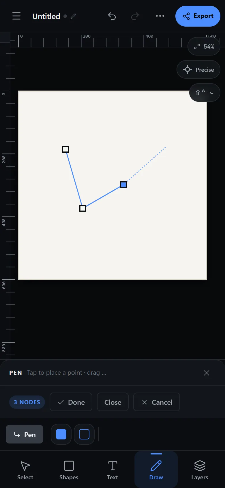
- Corner node. A plain tap. The path changes direction sharply there.
- Smooth node. Tap and drag without lifting: two handles come out symmetrically and further taps continue the curve smoothly.
- Break a handle. Hold ALT and drag one handle to make a cusp — a corner with one curved side.
- Close the path. Tap the first anchor and it fills. End on a different anchor to leave it open.
- Delete a node. ALT + tap on the node while editing its path.
- Commit. Press the check button on the right rail, or Done in the strip.
Chapter 4
Freehand: pencil and brush
The pencil turns a finger or stylus stroke into a small number of smooth nodes when you lift, instead of leaving hundreds of anchors behind.
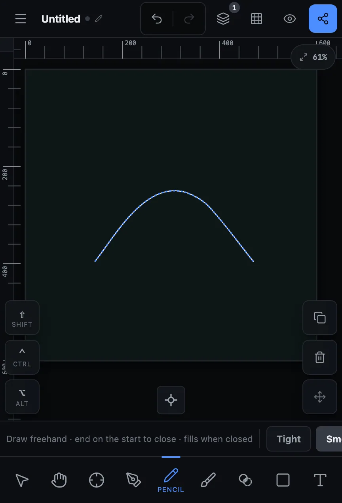
- Tight, Smooth, Loose. How closely the fitted curve follows your finger. Tight is most faithful, Loose evens out the most wobble.
- Closing. Finish where you started. A cue ring appears when the stroke will close into a filled shape.
- Single tap. Places one dot in the stroke colour.
- Pressure brush. The next tool along draws with a tapered width. Pressure follows a stylus or your finger speed; you can also choose Speed or a flat Uniform width.
Chapter 5
Shapes and the shape library
The square icon on the dock opens the shape tools: square, circle, triangle, star, polygon and line, plus the whole library of seventeen shapes. Drag on the canvas to place one; hold SHIFT while dragging to keep it square or circular.
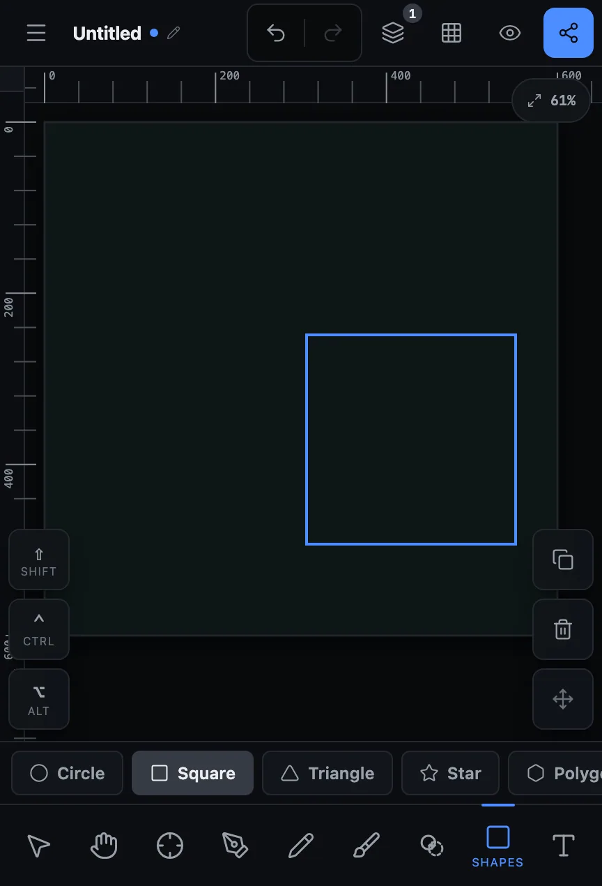
Once placed, a shape is an ordinary path: double-tap to edit its anchors, recolour it, duplicate it, or combine it with something else.
Chapter 6
The shape builder
This is the heart of Pentix. Two or more overlapping shapes on a layer are split into regions — the parts belonging to only one shape, and the parts they share. You brush the regions you want, and Pentix rebuilds the artwork as one clean outline.
The three moves
- Merge. Brush the regions you want to keep together and commit. The shapes become one object whose outline is exactly the union — no crescent left over, nothing doubled.
- Erase. Brush regions and commit, and that patch is cut out of every shape it touches. What remains is still your artwork, with the hole gone.
- Tap or drag. A drag collects every region the finger crosses. In erase mode a single tap removes just that one region, which is the quickest way to clear a few chips.
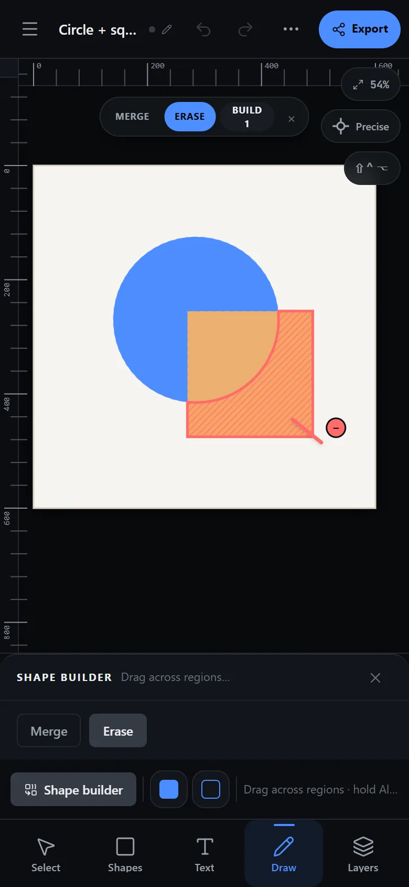
What a build guarantees
- One object per piece. A merge produces a single object. An erase produces one object for each remaining piece, and a shape the build never touched keeps its identity — no drift, no duplicate.
- Sharp where it should be. Corners the shapes form together stay sharp; curves stay curves.
- Paint survives. The result takes its fill and stroke from the region it grew out of, so a merge never looks like a recolour.
- Honest names. A cut circle is no longer a circle, so built objects become Shape 1, Shape 2 and so on. Untouched shapes keep their names.
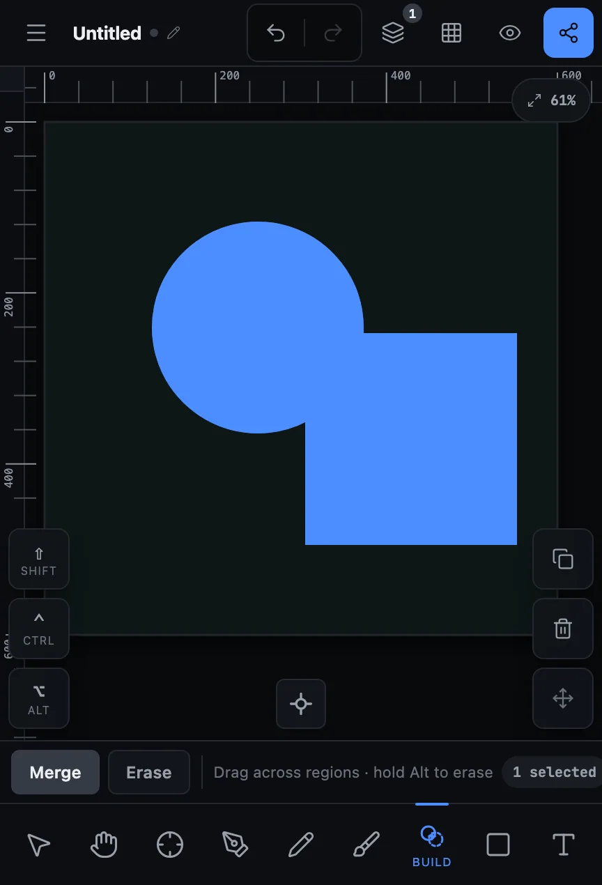
A worked example
Draw a circle, then a square overlapping its right side. Open the shape builder, brush the circle’s own region and the shared region, and commit with Merge. You now have a circle-and-square silhouette as a single path. Switch to Erase, tap the square’s free corner, and that corner is cut away cleanly.
Chapter 7
Pathfinder
When you want a boolean operation across a whole selection rather than a brushed area, select two or more objects and use More in the strip: Unite, Minus, Intersect or Exclude.
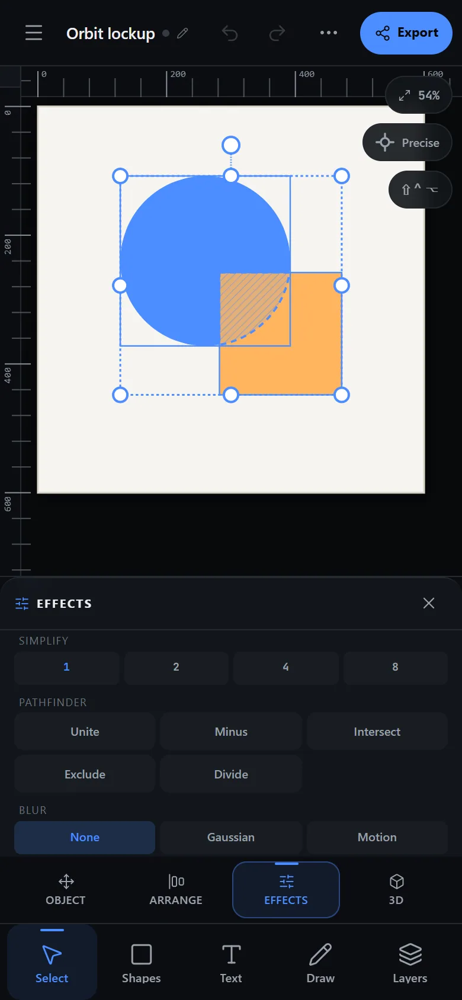
- Unite. One silhouette from the union of everything selected.
- Minus. Cuts the objects in front out of the object at the back.
- Intersect. Keeps only the area every selected object covers.
- Exclude. Keeps everything except the shared area.
Chapter 8
Layers and objects
The layers button in the top bar opens a panel listing the artwork from front to back. Each row is an object, and each layer header expands to show its contents.
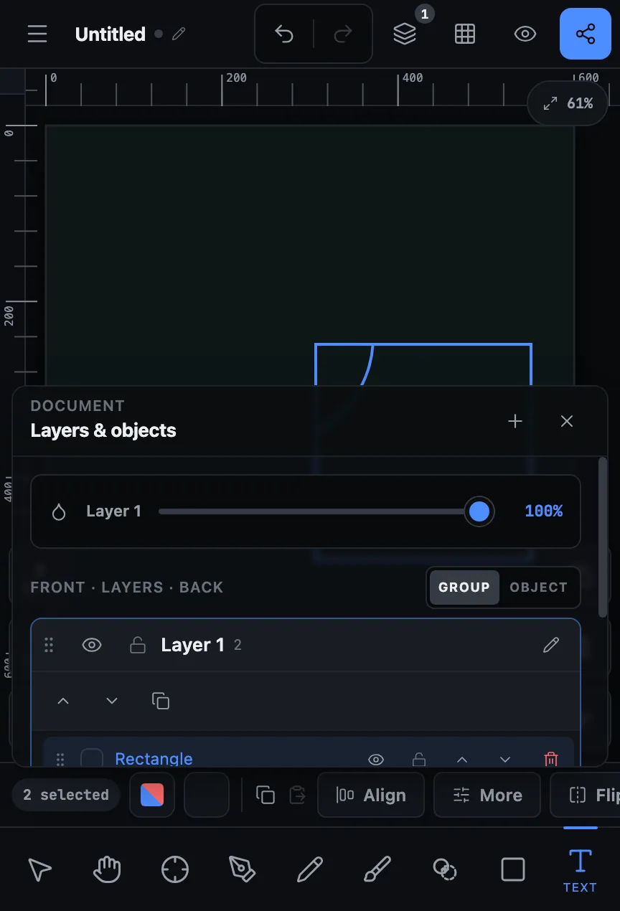
- Visibility and lock. The eye hides an object without deleting it; the padlock freezes it so it cannot be selected or moved by accident.
- Opacity. The slider on a layer sets it for everything in that layer.
- Restacking. Tap an arrow to step an object one place, or hold the arrow to send it to the front or back. Drag a row onto another to restack, or drop it on a layer name to move it into that layer.
- Group and object modes. GROUP selects a whole layer as one unit; OBJECT selects a single object inside it. Ungroup releases a layer’s contents into the layer beneath.
- On a keyboard. ALT + arrow up or down reorders; add SHIFT to jump to the front or back.
Chapter 9
Colour
Fill and stroke sit in the strip whenever an object is selected. The panel gives you swatches, a full picker, and a way to keep a colour you have mixed for reuse.
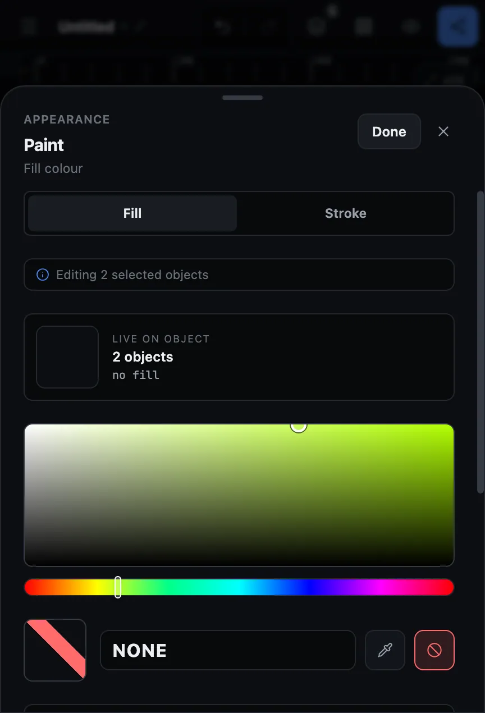
- Fill and stroke separately. Tap the fill swatch or the stroke swatch to choose which one you are editing.
- No stroke. A shape drawn without a stroke keeps “none” through a build, so combining shapes never adds an outline you did not ask for.
- Saved colours. Save this colour adds the current value to your palette at the top of the panel.
- Patterns. Named pattern swatches live in the menu, for fills you want to reuse across documents.
Chapter 10
Text
The T on the dock is the type tool. Tap the canvas to place a label and start typing; tap an existing label with the type tool to edit it.
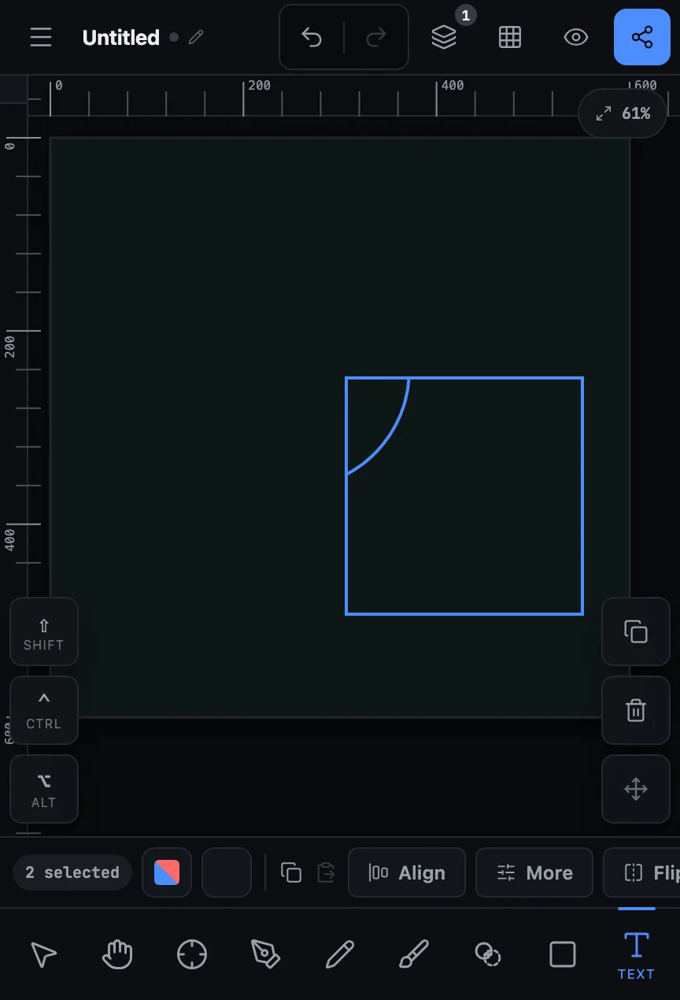
- Editing. Double-tap a label with the select tool, or tap it once with the type tool.
- To curves. Converts the glyphs into editable paths. Do this before an operation that needs geometry, such as the shape builder or a pathfinder boolean.
- Fonts. The menu’s Fonts section loads your own typefaces and keeps them on the device between sessions.
Chapter 11
Images, references and tracing
Three different jobs, three different places in the menu.
- References. Import one or several images as a locked underlay to draw over. They travel with the document, sit behind the artwork, and can be unlocked when you need to move them.
- Trace an image. Turns a high-contrast silhouette into real paths you can edit — the quickest route from a scanned sketch to vector artwork.
- Patterns. Named swatches you define once and reuse as fills.
Chapter 12
Saving, backup and projects
Pentix saves as you work. The menu tells you exactly where that stands, and the backup command writes a real file you control.
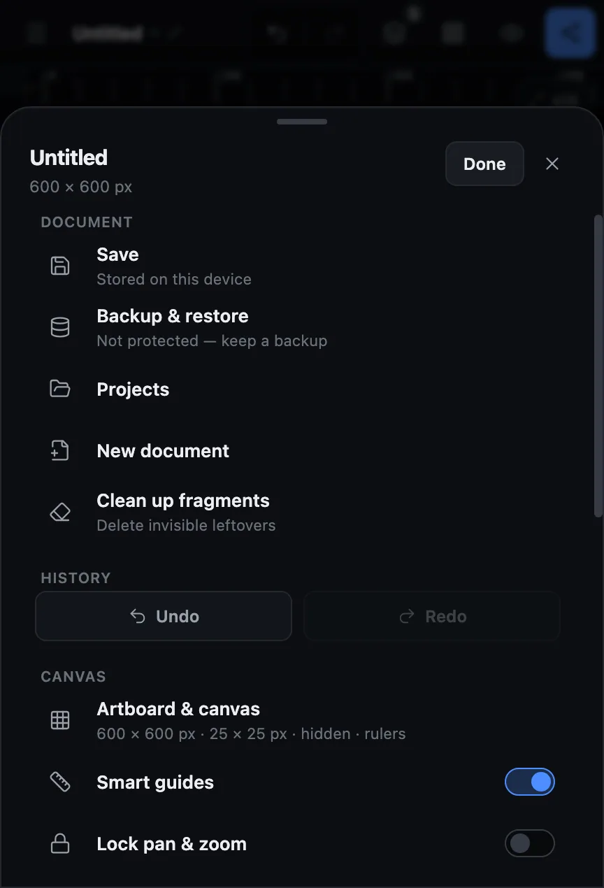
- Save. “Stored on this device” means the document is written locally. The dot beside the title shows a change is being written.
- Backup & restore. Writes a backup file you can keep anywhere, and restores one you saved earlier. When it reads “Not protected”, take a backup — clearing browser data would otherwise remove the document.
- Projects. Every document made on this device, newest first.
- New document. Starts a fresh board without touching the current one.
- Clean up fragments. Deletes invisible leftovers — tiny slivers and stray fragments that take up space but cannot be seen or used.
Chapter 13
Export
The share button in the top bar opens the export panel. SVG is for further editing and for the web; PNG is for handing a file to someone.
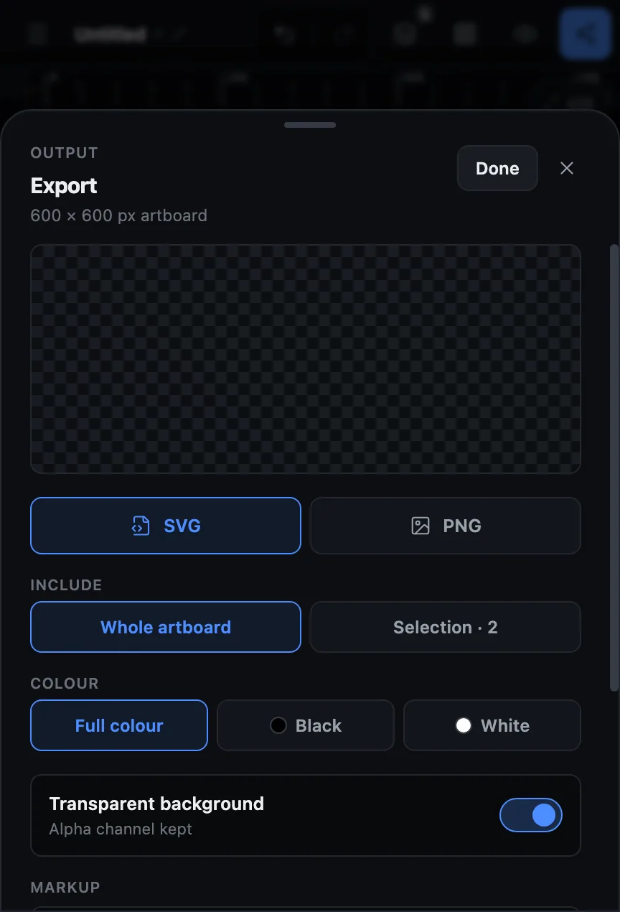
- SVG. Real vector output: paths, fills and strokes, editable in any vector tool.
- PNG. Raster output at the board size, or larger for print.
- Include. Export the whole artboard, or only the selection when you want one element on its own.
- One colour. Flattens every fill to black or white for reversed and mono versions of a mark.
- Background. The artboard colour is separate from the artwork. Turning it off drops the background entirely, which gives a transparent PNG or SVG.
Chapter 14
Preview mode
Before judging a mark, look at it with nothing else on screen. The eye in the top bar hides every panel, ruler, grid, guide and selection.
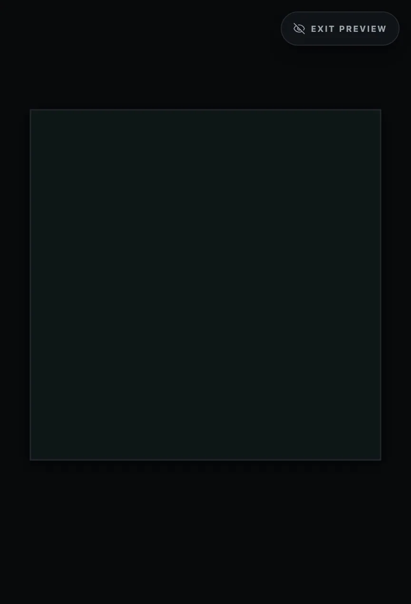
Chapter 15
Gestures and shortcuts
The same help sheet lives in the app under the menu, so you never have to remember this chapter.
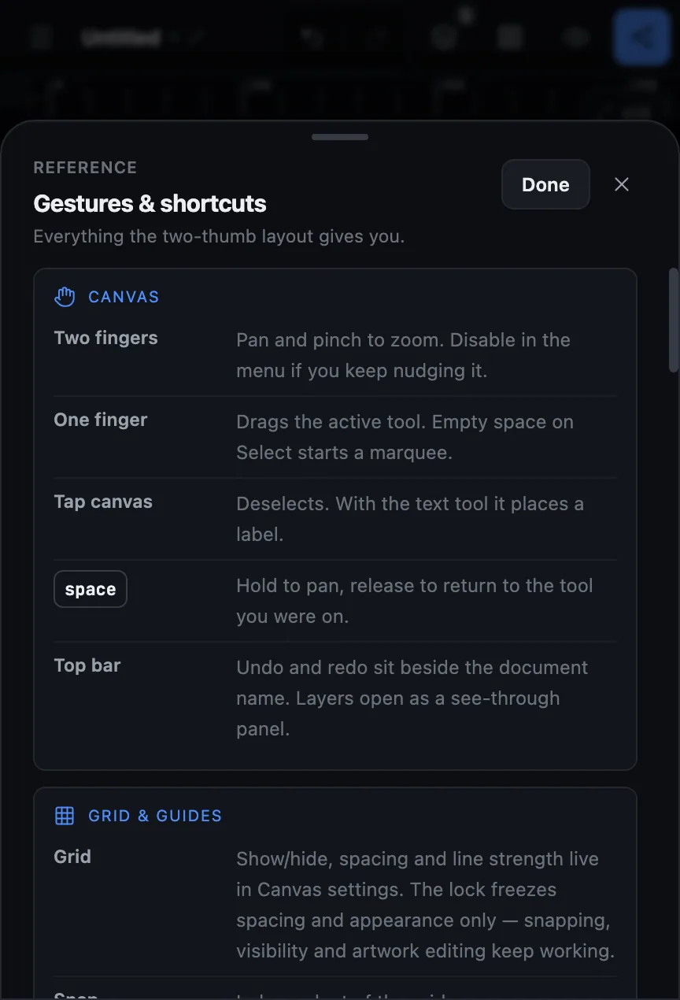
On the canvas
- Two fingers. Pan and pinch to zoom. You can switch this off in the menu if you keep nudging it while drawing.
- One finger. Drags the active tool. On empty space with the select tool it starts a marquee.
- Tap the canvas. Deselects — or places a label, with the type tool.
- Hold space. Pans while held, then returns you to the tool you were on.
On a keyboard
Chapter 16
Getting clean results
Why nothing happened when I brushed
- Not enough shapes. The shape builder needs two or more shapes on the layer to make regions. A single shape has nothing to divide.
- Nothing selected yet. In merge mode a tap only collects a region. Commit with Build, the pill’s Build button, or drag instead of tapping.
- Locked or hidden objects. Locked and hidden objects do not take part in a build. Unlock them first.
Why a piece disappeared
- Slivers are dropped. A leftover thinner than about three quarters of a square unit is noise, so it is discarded rather than left as an unusable fragment.
- A shape can vanish entirely. If the brushed area covers a whole shape, that shape is gone — undo if that was not the intent.
Keeping the file healthy
- Clean up fragments occasionally. Long editing sessions leave invisible slivers behind; the menu command removes them.
- Flatten at the end. Build and pathfinder operations are best done once the shapes are in place, not on every small edit.
- Back up before big changes. A backup file is the only protection against clearing browser data or losing a device.
Chapter 17
Reference card
The whole app on one page. Keep it open while you work.